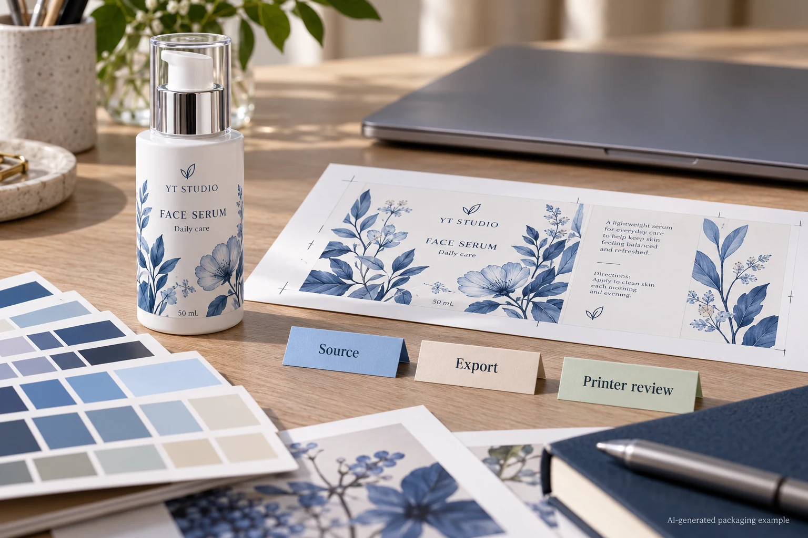
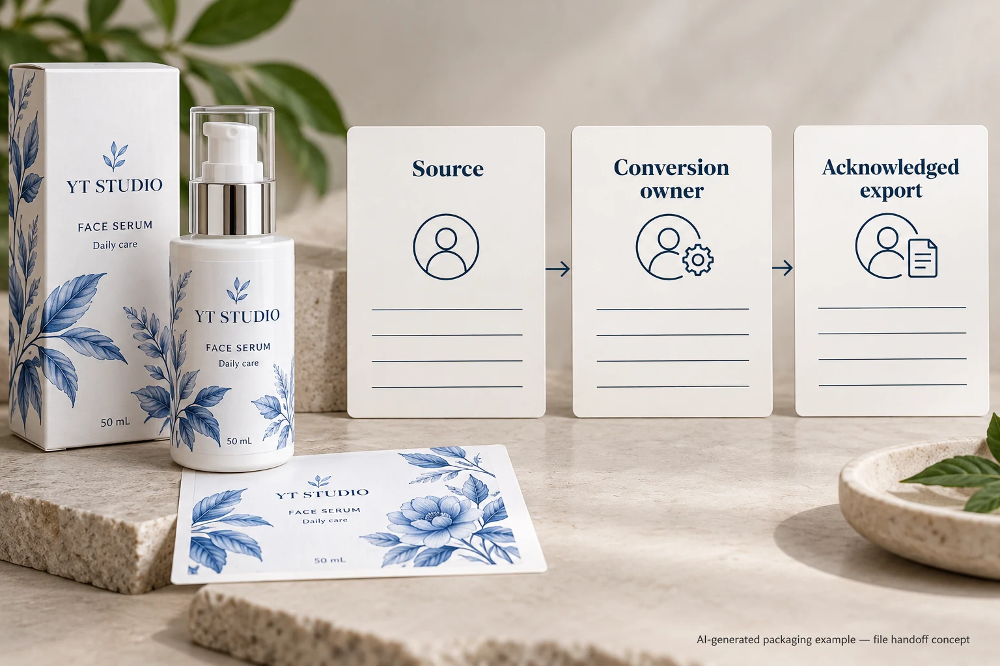

The artwork team has a CMYK label. The printer asks for a production PDF. Somewhere between those two statements, somebody still needs to decide whether colours will be converted, which printing condition the file represents and who controls the next conversion.
Agree that handoff before exporting another file called final. A CMYK document is not, by itself, a complete colour-management instruction. Obtain the receiving printer's requirements, identify the source and intended output conditions, and make one acknowledged export against that route. Preserve the editable master so corrections do not begin with an already altered copy.

Ask what has already happened to the colours
Start with the actual file, not the label's thumbnail. Ask the designer to identify the document colour setup, relevant placed images and any previous conversion. A photograph imported from another application may carry information different from the vector text beside it. A supplied logo may include a spot ink that has a different production role from ordinary process-colour artwork.
Record what is known and leave unknown history explicit. If the only available asset is an exported PDF with uncertain preparation, the next action is inspection with prepress, not repeatedly saving it through different presets. A filename containing CMYK does not establish either the profile or the route used to create it.
The linked-image handoff guide helps locate the relevant source assets. Here the decision is what colour interpretation and conversion those assets should receive when the production file is delivered.
Assigning a profile and converting colours do different jobs
Adobe distinguishes assigning a profile from converting to one. Assigning changes the interpretation of existing values; converting transforms values toward the destination colour space while trying to retain appearance. Those are different actions. Changing the profile label simply to make it resemble the printer's requirement is not evidence that a suitable conversion has occurred.
The buyer does not need to prescribe a software recipe. Ask design and prepress to agree the relevant source information, destination or output condition, and the party responsible for conversion. If the source is untagged or uncertain, have them explain the supported assumption before changing it. An incorrect assumption can be carried forward in a technically tidy-looking PDF.
This is a workflow discussion, not a guarantee that all screen colours can be reproduced. The physical label stock, ink process, opaque backing and protective finish still belong in the appearance review. Use a representative physical reference when a critical brand colour needs approval.
Choose a handoff route that the printer acknowledges
One project may use a printer-supplied destination profile and agreed export instructions. Another may deliver source colour information for a receiving workflow that controls the conversion. Either route needs the receiving team's acknowledgement. A familiar profile used for a previous carton job should not silently become the default for a different label material and press arrangement.
Adobe's PDF guidance separates the conversion choice, destination profile, inclusion of profiles and PDF/X output-intent information. Keep those fields connected. Selecting a PDF standard does not remove the need to confirm the intended production condition and the actual file the printer accepts.
Also identify technical and spot channels separately. Do not turn every named separation into process colour just because the project is discussing CMYK. White, cutting or finishing instructions have their own roles. The spot-colour channel guide addresses reconciliation of those instructions.
Review one controlled export
| Handoff field | Information to establish | Check before release |
|---|---|---|
| Source | Editable master, revision, placed assets and known colour information | The designer can identify what is being exported |
| Receiving route | Current printer requirement and responsible prepress contact | It applies to this process and construction |
| Conversion owner | Who converts, at which stage and against which agreed destination | The same transformation is not being assumed by both parties |
| Export | File ID, conversion choice, profile policy and required output intent | The delivered file follows the acknowledged route |
| Sensitive objects | Brand colours, small black copy, spot and technical channels | Expected treatments survive the export |
| Acceptance | Relevant appearance reference, prepress acknowledgement and unresolved items | File acceptance is not being mistaken for physical colour approval |

Complete the source and receiving rows first. Have the designer produce the agreed export, then ask prepress to inspect that exact file. Mark any correction by object and file revision. If a source setting or output condition changes, produce a new identified export and check the affected content again.
For example, a hypothetical label contains compact black directions and a large dark decorative panel. If conversion changes the small text's channel build, the text needs review against the printer's intended treatment. That is a specific finding to resolve, not a reason to substitute a universal rich-black formula. The black ink build guide covers that object-level question.
Stop the colour handoff if the destination is guessed, the printer and designer disagree over who converts, or the acknowledged file cannot be identified. Keep the original and replacement rather than overwriting the history that could explain the difference.
Keep the proof within its actual scope
A screen preview can help identify a changed colour or an unexpected object treatment. Its appearance also depends on the viewing system. A phone screenshot is not a contract proof, and a file that passes prepress inspection has not thereby established the finished label's colour on the bottle.
The proportionate next step depends on the job. A simple repeat order may use its established, unchanged workflow and physical reference. A new material, printer or colour route has a reason to obtain a fresh relevant appearance assessment. Ask what the proposed sample represents and what remains open; do not buy an unexplained export change as though it were a measured improvement.
Send the colour handoff with the inquiry
For custom cosmetic labels, provide the container reference, label dimensions, artwork revision and quantity per design. Include the current production file, known source colour information, any printer-supplied output instructions and the brand colour reference. Identify the decision that remains unresolved: conversion ownership, destination or the appearance of an affected object.
Use the inquiry form to prepare a message, then send artwork and profiles or reference records separately by email or WhatsApp. The form does not upload attachments. Finish the discussion with an acknowledged output route and a named file, so the next proof can be compared for an actual reason.
Sources: Adobe on assigning and converting profiles explains the difference between interpretation and conversion. Adobe Illustrator PDF options explains output conversion, destination and profile policy. These software references do not specify a universal profile for YT Labels or certify any production export.